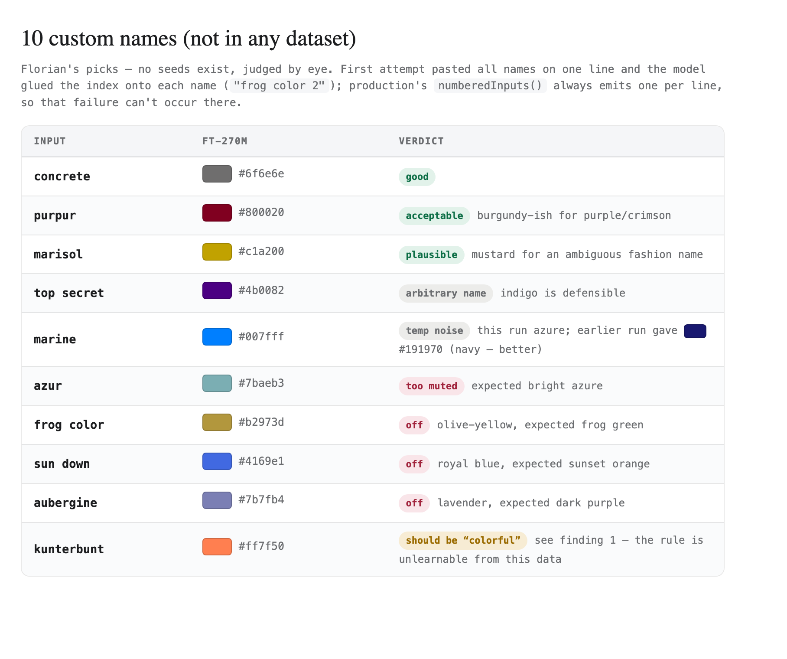

Colormaxing I — How Many Parameters Does One Simple Job Need?
The Colormaxing saga: 0. The Prequel · 1. One Simple Job · 2. Benchmaxing My Own Benchmark · 3. In Public
I just watched a video about fine-tuning small AI models, and it overlaps with an experiment I ran the week before — my attempt to see whether naming colors could run entirely on my own laptop. After watching the video, I had one question: how many parameters would it take to do the job?
Parameters are the knobs inside an AI model — the numbers that hold everything it knows. The models everyone talks about have hundreds of billions of them and live in a data center. The one this story ends with has 270 million, lives on my MacBook, and was trained in eight minutes.
The job interview: twenty-five thousand questions
Online shops use a wide array of marketing and colorful language to describe products — a hard job for the AI: glühendes orange-arktikblau, kunterbunt, sun down. A service I built turns each one into a hex code — the six-character #ff6600 notation a screen needs to show a color. The names come in German, Spanish, Greek, Hungarian and Turkish, which is why language knowledge matters more than size here.
For years a hosted AI model did that translation. The early ones, from the davinci era, were terrible at it in a way nobody warned me about: not at the colors — at the JSON, the rigid bracket-and-quote format computers exchange data in. They would forget quotation marks and drop commas, so I built a harness that babysat them: ask for ten colors, and if the answer didn't parse, split the batch in half, try again, split again, down to a single color, then give up on it. We fought the punctuation more than the colors.
Today's model, GPT-4.1 mini, got the punctuation under control — and left me a cache: about 25,000 color names it had already answered. Twenty-five thousand question-answer pairs is a textbook. And a textbook means you can send a much smaller model to school.
Not every model can do the job
I had read just enough to be dangerous: the base model should be an instruct version (trained to follow directions, no thinking-out-loud), and it has to come as safetensors, not GGUF. I asked my AI assistant to sort out what that actually meant.
The distinction turns out to be simple: safetensors is the editable original, GGUF is the baked export — a project file versus a PDF. You train on the original; you run the fast, flattened copy. My confusion peaked when the plan said to download both formats of the same model, until it clicked that they had two different jobs: the safetensors to learn, the GGUF to answer.
We picked Google's Gemma 3 family — strong on languages for its size, which the Greek and Hungarian color names would punish — in two sizes: 1 billion parameters, plus a deliberately tiny 270-million-parameter comparison — the "surely this is too small" model.
Before training, a baseline: how do the untrained models do on my 100-name test set? The answer justified the whole experiment. The untrained 1-billion-parameter model answered only 16 of 100 names and matched none exactly. The untrained 270-million one answered 79, but its colors were no better than darts thrown at a paint catalog.
Difficulties on the first day
The first training run failed in twenty-five seconds with the least helpful sentence of the week: [grad] Must specify at least one argument.
The second run, on the other model, failed identically. Digging into the training tool's own source code found the culprit: two parts of the program disagreed about a default. The interface I was calling silently marked every single layer of the model as frozen — not trainable — unless told otherwise, while the trainer underneath assumed the opposite. Net effect: it was being asked to teach a student in which nothing was allowed to learn. Three explicit flags fixed it, and a bug report is drafted for the maintainers.
I find this failure oddly comforting. The exotic part — teaching a language model — worked on the first honest attempt. What broke was the oldest kind of software bug there is: two functions with different opinions about a default value.
Eight minutes of preparation
The 270M model trained in eight minutes on the MacBook. Loss — the running measure of how wrong the model still is — fell from 0.89 to 0.35 over 459 steps, which is the graph equivalent of watching a student stop guessing.
Then I opened a chat window and typed "hex for red". Junk came back.
That was the first real lesson about specialists. The model hadn't learned about colors; it had learned a dialect — the exact question format from its 25,000-example textbook, ten names at a time, every bracket and quotation mark in place. Ask in the trained dialect and it performs; ask casually and you get a generic small model shrugging at you. My assistant built me the properly formatted prompt, I pasted it into the side-by-side comparison view — untrained model on the left, my fine-tune on the right — and ran it.
The left side answered #rrggbb — the placeholder from my own prompt — parroted seven times for ten questions. It couldn't even count to ten. The right side returned all ten names, perfect JSON, plausible colors.
It's magical, I wrote.
The results are in: Kunterbunt
Benchmarks are easy to fool, so I added my own twist: ten color names I invented on the spot — frog color, top secret, kunterbunt, marisol, sun down, Aubergine — none of them in the training data, several of them barely colors at all. I pasted the model's answers back to my assistant and had it grade them, then turned the results into a web page where every answer renders as a color swatch next to the judgment.

kunterbunt — German for "riotously multicolored" — came back as a warm salmon. Wrong, arguably; charming, definitely. marine came back navy. concrete came back concrete. For a model that fits in a phone's memory, invented names in two languages landing this close is the moment the question from the video stopped being theoretical.
One more thing surprised me: asked about colors in plain chat, the fine-tune now reasons — blue is like the sky, red is like a tomato. We never taught it that. The training touched only about one percent of its weights, so the base model's chattiness survived underneath, now steered toward color. School didn't replace its personality; it gave the personality a profession.
A rematch against the local champion
Then the real exam: the same 100-name test I had run against six full-sized local models the week before, none of the names in the training data.
The fine-tuned 270M scored 21 exact matches. My daily 35-billion-parameter model — the best off-the-shelf contender — scored 18. A model one 100th the size beat it at this one job. The fine-tuned 1B pushed further: 29 exact, over half of all answers within close visual range of the reference, at 0.12 seconds per color.
So: how many parameters does one simple job need? A quarter of a billion for a specialist is already promising. But we decided to continue with the 1-billion-parameter model — roughly a gigabyte on disk, and slightly more proficient across languages.
The exam: Will the student outperform the teacher?
In each iteration of the training, a small pattern appeared in the answers: I started to suspect the student might be more right where the teacher was sloppy. But how could I visually check whether my hunch was correct?
I know! Let's build a dataset!
A bigger exam is running now: all 60,000 color names saved by the live service, student versus teacher, disagreement by disagreement. That's the next part of this story.